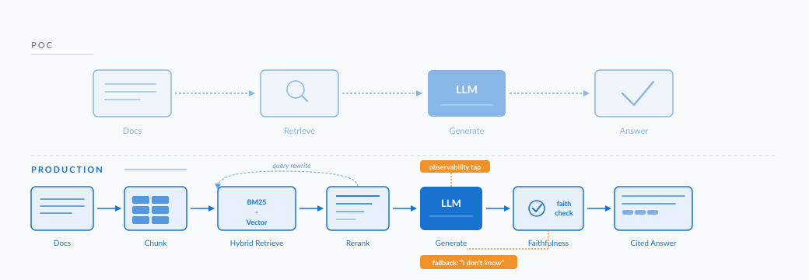
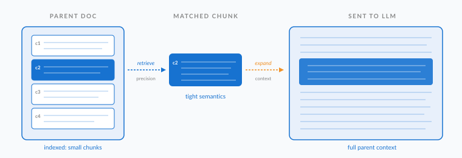
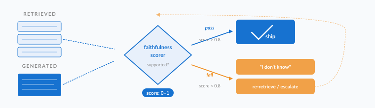

From RAG POC to Production: What Actually Changes
The gap between a working RAG demo and a system that survives real users isn't a sprint. It's a different sport.

The POC That Lied to You
You've been there. A stakeholder asks if AI can answer questions over the company knowledge base. You spin up a notebook, pull in LangChain or LlamaIndex, point it at a folder of PDFs, wire up OpenAI, and within an afternoon you have a chatbot that answers questions over your documents. The demo lands. People are impressed. Someone says the word "production."
That's where the trouble begins.
I've taken RAG systems from notebooks into production at three different companies now , a contract analyzer at Hilabs, a knowledge-specific chatbot at Apexanalytix, and most recently the document intelligence layer of ConstructIQ™ at Oracle. Every single time, the gap between the demo and the system that actually survived real users was bigger than I expected.
This post is what I wish someone had handed me before my first production rollout. Five things change when RAG meets reality: retrieval quality, hallucination control, observability, cost, and the human side of trust. Get these wrong and your beautiful demo becomes the system everyone quietly stops using.
| Concern | In the POC | In Production |
|---|---|---|
| Retrieval | Top-k vector search, default chunking | Hybrid BM25 + vector, parent-child indexing, reranking, query rewriting |
| Hallucination | "Looks fine to me" | Forced citations, faithfulness scoring, "I don't know" as a first-class output |
| Observability | Print statements | Per-request traces with retrieved chunks, scores, tokens, latency, user feedback |
| Cost | Rounding error on the OpenAI bill | Tiered models, semantic cache, incremental embedding refresh, context budgeting |
| Trust | "Try it out!" | Citations UI, feedback loops, tiered routing for the long tail of hard queries |
1. Retrieval Quality: The 80% That No One Talks About
In the demo, you ask "what is our refund policy?" and the system returns the refund policy section. Magic.
In production, users ask things like:
- "can i get my money back if i bought it last tuesday and the box was damaged"
- "refund window?"
- "what's the SLA on returns for B2B clients in EU markets?"
Suddenly your top-k retrieval is pulling chunks about shipping policies, terms of service, and a 2018 marketing email about holiday returns. The LLM, dutifully grounded in the wrong context, hallucinates a confident answer.
In production RAG, retrieval quality is 80% of the system. The LLM is the smaller problem.
What changes in production:
Chunking is no longer "1000 tokens with 200 overlap"
That naive default works for the demo because the demo questions are kind. In production, you need chunking that respects document structure. For a contract, that means clause-level chunking with metadata about parent agreement, section type, and effective dates. For a knowledge base, parent-child indexing , where small chunks are retrieved but the parent context is passed to the LLM , made a measurable difference for me. Retrieval precision went up because small chunks have tighter semantics; generation quality went up because the LLM saw enough surrounding context to reason.

Pure vector search is not enough
Embeddings are great at semantic similarity but terrible at exact matches , product SKUs, error codes, account numbers, contract reference IDs. Hybrid retrieval (BM25 + vector, fused with reciprocal rank fusion) is now my default. On the contract analyzer at Hilabs, switching from pure vector to hybrid lifted exact-match accuracy on entity-grounded queries from "frustrating" to "shippable."
Reranking is the cheap win nobody uses
Most teams retrieve top-20 and pass them all to the LLM. Bad idea , noise pollutes generation, costs balloon, latency spikes. Retrieve top-50, rerank with a cross-encoder (Cohere Rerank, BGE Rerank, or your own fine-tuned), and pass top-5 to the LLM. On my offers search engine, reranking delivered an accuracy gain and a latency reduction simultaneously, because we stopped sending bloat to a slow model.
Query rewriting is doing real work
Users write terrible queries. Single-word searches. Pronouns referring to nothing. Multi-intent compound questions. A small upstream LLM call to expand, decompose, or rewrite the query before retrieval typically pays for itself many times over in retrieval quality. Yes, it adds latency. No, you can't skip it.
2. Hallucination Control: Grounding Is Not a Switch
The demo answers were correct because you asked the demo questions. In production, users will ask things your knowledge base doesn't contain , and your system will confidently make up an answer that sounds exactly like the real ones. This is the failure mode that destroys trust.
A few defenses I now consider non-negotiable:
"I don't know" must be a first-class output
Your prompt needs to explicitly authorize and structure the "no answer" response. The LLM must be told that returning "the documents don't contain this information" is preferable to guessing. This sounds obvious. It is shocking how often production systems are built without it.
Citations are a forcing function
Require the LLM to cite the chunk ID for every claim. This does two things. First, it gives users a way to verify. Second, and more importantly, it makes hallucination harder , the model has to commit to a specific source, which constrains generation toward retrieved content.
Faithfulness checks at inference time
A second LLM call (or a smaller dedicated model) that scores whether the generated answer is supported by the retrieved chunks. Phoenix and LangSmith both ship this out of the box. When the faithfulness score drops below threshold, fall back to "I don't know" or escalate to a different retrieval strategy. This is a real-time guardrail, not a quality dashboard.

LLM-as-judge for offline regression
Build an evaluation set of 200 to 500 real production queries with ground-truth answers. Run it nightly. When you change the chunking strategy, the embedding model, or the prompt, you'll see immediately whether quality regressed. I've watched teams ship a "small prompt tweak" and silently lose 8% on faithfulness because nobody had a regression suite. Don't be that team.
3. Observability: You Cannot Improve What You Cannot See
The demo had print statements. Production needs an observability stack on day one , not month six.
What you actually need to log, per request:
- The raw queryWhat the user actually typed, verbatim.
- The rewritten/expanded queryWhat your system actually searched for after preprocessing.
- The retrieved chunksIDs, scores, source documents.
- The reranker scoresBefore vs. after reranking, so you can tell when the reranker is helping.
- The final prompt sent to the LLMIncluding any system prompt, few-shot examples, and the assembled context.
- The raw LLM responsePre any post-processing, exactly as the model returned it.
- Latency at each stageSo you know which stage to optimize when latency budgets get tight.
- Token counts and costPer stage and per request, so cost regressions are visible immediately.
- User feedbackThumbs up/down at minimum, free-text reasons when offered.
LangSmith and Arize Phoenix have made this dramatically easier than it was 18 months ago. Use them. The day a user reports "the chatbot gave a weird answer," you will be able to pull up the exact trace, see what was retrieved, see what was sent to the LLM, and diagnose the failure in minutes instead of guessing for days.

The observability investment pays compound interest. Once you can see every request, you can:
- Cluster failed queries to find systemic gaps in your knowledge base
- Identify which document sources cause the most hallucinations
- Spot prompt drift when a model upgrade silently changes behavior
- Build a feedback loop where thumbs-down responses become your next eval set
This single discipline separates "RAG project that died after launch" from "RAG product that compounds."
4. Cost: The Bill Is Not What You Modeled
In the demo, you ran 50 queries during testing and the OpenAI bill was rounding error. In production, the same system serves 50,000 queries a day, each one with reranking, query rewriting, faithfulness checking, and a 4K-token context window. Suddenly you're staring at a five-figure monthly bill and your CFO has questions.
Where the cost actually goes:
Context window inflation
Every chunk you stuff into the prompt costs tokens twice , once on input, once influencing output length. Most teams send too much context out of fear of missing something. Rerank harder, send less. Halving the context window typically does not measurably hurt answer quality but reliably halves your generation cost.
Embedding refresh
Whenever a document changes, you re-embed it. If you re-embed your entire corpus on every minor edit, you're burning money. Build incremental indexing , hash-based change detection, document-version-aware embeddings, dirty-only refresh. This is unglamorous infrastructure work that has saved me five-figure annual costs at multiple companies.
Model selection per task
Not every step needs GPT-4. Query rewriting? GPT-4o-mini or Claude Haiku is plenty. Reranking? A dedicated cross-encoder is 100x cheaper than asking GPT-4 to rerank. Final answer generation on a high-stakes query? Use the big model. The pattern is "tier the model to the task." A multi-model RAG pipeline is typically half the cost of a "GPT-4 for everything" pipeline at the same quality.
| Stage | Naive (GPT-4 everywhere) | Tiered (right-sized model) |
|---|---|---|
| Query rewriting | GPT-4 Turbo | GPT-4o-mini / Claude Haiku |
| Reranking | GPT-4 as judge | Cross-encoder (~100× cheaper) |
| Faithfulness check | GPT-4 evaluator | Small dedicated scorer |
| Final answer | GPT-4 Turbo | GPT-4 Turbo (high-stakes) |
| Cache lookup | Skipped | Semantic cache (30–50% hit rate) |
| Total per query | 1.0× (baseline) | ~0.5× at equivalent quality |
Caching that actually works
Semantic caching , where similar queries reuse cached responses , can cut traffic to the LLM by 30 to 50% on systems with repetitive query patterns (which is most enterprise systems). The implementation is fiddly because you have to balance cache hit rate against staleness, but the ROI is enormous.
5. The Human Side: Trust, Onboarding, and the Long Tail
This last category is the one engineers consistently underestimate. A RAG system is only useful if humans actually use it. Adoption is a product problem, not a model problem.
The first wrong answer matters more than the next ten right ones
Users build a mental model of the system based on early interactions. Get those wrong and they will permanently distrust the tool, even after you fix the underlying issue. This is why I now invest disproportionately in the first weeks of rollout , tight feedback loops, fast iteration, sometimes even human-in-the-loop review for the first 1,000 production answers. Frontload trust.
Show your work
Citations, snippet previews, "this answer is based on these 3 documents" UI patterns , these aren't decorative. They tell the user "this system is grounded, not guessing" and they give the user agency to verify. Every production RAG system I've shipped has converged on the same UX shape: answer at the top, sources below, with confidence indicators when appropriate.

Build the feedback loop into the product, not the analytics dashboard
Thumbs up/thumbs down with a free-text "what was wrong?" field, surfaced inside the chat interface, is the cheapest evaluation system you'll ever build. The data quality is dramatically higher than anything you'll get from periodic user surveys, and it gives the user a sense that the system is improving , which itself drives adoption.
Plan for the long tail
In every production RAG system I've worked on, 60 to 80% of queries are covered by maybe 100 question patterns. The remaining 20 to 40% is a heavy tail of unique, often hard, often unanswerable queries. Don't try to solve the tail with the same pipeline that handles the head. Route the head queries through fast, cheap, well-tuned paths. Route the tail through more expensive, more careful paths , or escalate to a human. A tiered RAG system with smart routing typically beats a "one pipeline for everything" system on both quality and cost.
The actual code from a POC to a production RAG system is maybe 30% different. The mindset is 100% different.
What I Tell Engineers Now
When someone shows me a working RAG demo and asks how to take it to production, I ask three questions before anything else:
- What does failure look like?Not "the answer is wrong" , specifically. Wrong by hallucination? Wrong by retrieval miss? Wrong by stale data? Each failure mode has a different fix.
- How will you know if quality regresses?If the answer is "users will tell us," the project is in trouble before it starts.
- What is the per-query budget?Cost per query, latency per query, error budget. If you can't name these, you're not building a product , you're prototyping forever.
The POC asks "can the model do this?" Production asks "what happens when 10,000 users hit it tomorrow?" Most of the engineering effort goes into the gap between those two questions.
If you're standing in front of a working demo wondering what to do next , start with retrieval quality, build observability before you need it, plan for hallucinations as a first-class concern not an edge case, model your costs honestly, and invest in trust from day one.
The demo is the easy part. The system that survives real users , that's the work.